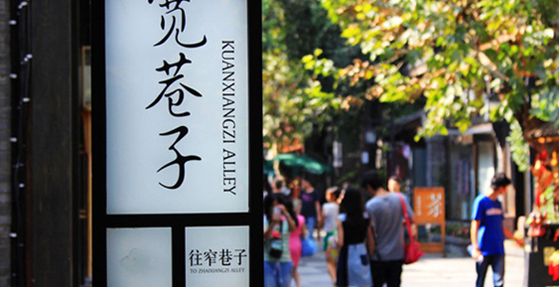

- 
-
西宁+青海湖+拉萨+日喀则+羊卓雍措+纳木措8 日7晚使用性质：充电地貌类型：山丘 使用性质：充电地貌类型：山丘

 北京 • 158人去过
北京 • 158人去过
- 矿泉水
- 快餐
- 民宿
- 酒店
- 帐篷
- 爬山
- 划船
- 摩天轮
阿布扎比魅力四射的多元文化、动人心魄的奢华体验、惊险刺激的探险经历和阿拉伯人的热情好客等待您来发现。前往谢赫扎耶德大清真寺，惊叹于举世闻名的地标建筑，在阿布扎比法拉利世界体验全球速度最快的过山车，乘坐快艇穿梭于阿联酋首都的迷人海岸线，在阿哈弗拉滑沙时聆听大风的呼啸声，或漫步于艾恩清爽绿洲，尽享内心的平和与宁静。
阿布扎比魅力四射的多元文化、动人心魄的奢华体验、惊险刺激的探险经历和阿拉伯人的热情好客等待您来发现。前往谢赫扎耶德大清真寺，惊叹于举世闻名的地标建筑，在阿布扎比法拉利世界体验全球速度最快的过山车，乘坐快艇穿梭于阿联酋首都的迷人海岸线，在阿哈弗拉滑沙时聆听大风的呼啸声，或漫步于艾恩清爽绿洲，尽享内心的平和与宁静。
阿布扎比魅力四射的多元文化、动人心魄的奢华体验、惊险刺激的探险经历和阿拉伯人的热情好客等待您来发现。前往谢赫扎耶德大清真寺，惊叹于举世闻名的地标建筑，在阿布扎比法拉利世界体验全球速度最快的过山车，乘坐快艇穿梭于阿联酋首都的迷人海岸线，在阿哈弗拉滑沙时聆听大风的呼啸声，或漫步于艾恩清爽绿洲，尽享内心的平和与宁静。

阿布扎比魅力四射的多元文化、动人心魄的奢华体验、惊险刺激的探险经历和阿拉伯人的热情好客等待您来发现。前往谢赫扎耶德大清真寺，惊叹于举世闻名的地标建筑，在阿布扎比法拉利世界体验全球速度最快的过山车，乘坐快艇穿梭于阿联酋首都的迷人海岸线，在阿哈弗拉滑沙时聆听大风的呼啸声，或漫步于艾恩清爽绿洲，尽享内心的平和与宁静。
阿布扎比魅力四射的多元文化、动人心魄的奢华体验、惊险刺激的探险经历和阿拉伯人的热情好客等待您来发现。前往谢赫扎耶德大清真寺，惊叹于举世闻名的地标建筑，在阿布扎比法拉利世界体验全球速度最快的过山车，乘坐快艇穿梭于阿联酋首都的迷人海岸线，在阿哈弗拉滑沙时聆听大风的呼啸声，或漫步于艾恩清爽绿洲，尽享内心的平和与宁静。
阿布扎比魅力四射的多元文化、动人心魄的奢华体验、惊险刺激的探险经历和阿拉伯人的热情好客等待您来发现。前往谢赫扎耶德大清真寺，惊叹于举世闻名的地标建筑，在阿布扎比法拉利世界体验全球速度最快的过山车，乘坐快艇穿梭于阿联酋首都的迷人海岸线，在阿哈弗拉滑沙时聆听大风的呼啸声，或漫步于艾恩清爽绿洲，尽享内心的平和与宁静。
阿布扎比魅力四射的多元文化、动人心魄的奢华体验、惊险刺激的探险经历和阿拉伯人的热情好客等待您来发现。前往谢赫扎耶德大清真寺，惊叹于举世闻名的地标建筑，在阿布扎比法拉利世界体验全球速度最快的过山车，乘坐快艇穿梭于阿联酋首都的迷人海岸线，在阿哈弗拉滑沙时聆听大风的呼啸声，或漫步于艾恩清爽绿洲，尽享内心的平和与宁静。